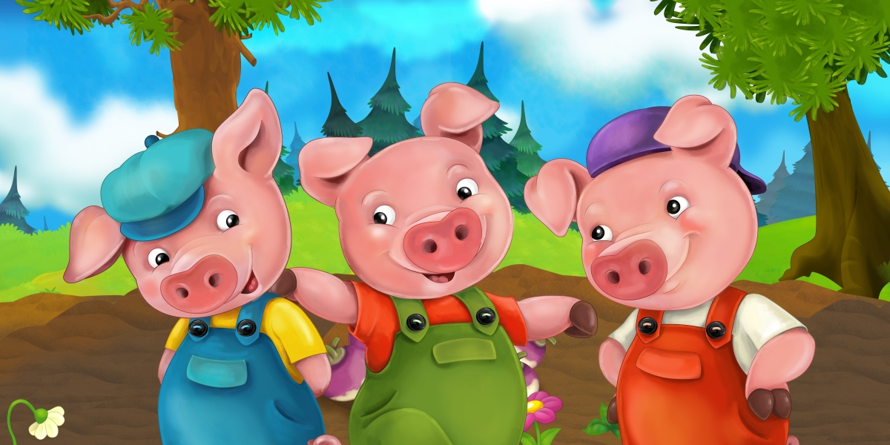

Cei trei purceluși
A fost odată ca niciodată o purcea, care avea 3 purceluși, însă nu avea suficientă mâncare pentru toți trei. Așa că, atunci când s-au
facut suficient de mari, mama i-a trimis în lume să își încerce norocul. Primul purceluș era foarte leneț. Nu voia să muncească deloc
și și-a construit o casă din paie. Al doilea purceluș era ceva mai muncitor, însă avea momentele lui de lene. El și-a construit o casă
din bețe. Al treilea purceluș era cel mai muncitor. Lucra toata ziua și și-a construit o casa solidă, din caramidă. În ziua următoare,
n lup a trecut prin padurea unde cei trei purceluși își ridicaseră casele. El a văzut casa de paie, a simțit mirosul primului porcușor
și i s-a făcut foame.
Așa că a bătut la ușă și a rugat porcușorul să-l lase înăuntru:
– Porcușorule, porcușorule, lasă-mă să intru!
Dar porcușorul a văzut labele mari ale lupului și și-a dat seama de intențiile lui:
– Pleacă, lupule! Nu te las să intri!
Auzind acestea, lupul și-a aratat dinții și a spus:
– Atunci o să ma umflu și-o să suflu, de o să-ți pun casa la pământ!
Lupul a tras puternic aer în piept și a dărâmat casa purcelușului. A deschis gura cât de larg a putut și a dat să-l înhațe pe purceluș,
ar acesta a scăpat și a reușit să ajungă la fratele sau, cel cu casa din bețe. Lupul a continuat să mearga prin padure, până ce a ajuns
în fața casei din bețe. Aici a simțit mirosul celor doi purcelusi, iar foamea l-a lovit și mai tare. A batut iar la ușă:
– Porcușorilor, porcușorilor, lăsați-mă să intru!
Uitându-se pe gaura cheii, porcușorii au vazut urechile ascuțite ale lupului și și-au dat seama de pericol:
– Pleacă, lupule! Nu te lăsăm să intri!
Auzind acestea, lupul și-a arătat dinții și a spus:
– Atunci o să mă umflu și-o să suflu, de o să vă pun casa la pământ!
Lupul a tras aer în piept, s-a umflat și a suflat, dărămând casa de paie a porcușorilor. Din lacomia lui, lupul a încercat să îi prinda
pe amandoi porcușorii, astfel ca i-au scăpat amândoi. Lupul i-a alergat prin padure și aproape i-a prins, însă ei au reușit să se
ascundă în casa de caramidă a fratelui lor, cel de-al treilea purceluș. Cei trei purceluși erau foarte speriați, știind că lupul vrea
să îi mănânce. Aveau dreptate să fie speriați, căci lupului, după alergătura prin padure, îi era chiar mai foame decât până acum.
Așadar a bătut la ușa celui de-al treilea porcușor:
– Porcușorilor, porcușorilor, lăsați-ma să intru!
Uitându-se pe gaura cheii, porcușorii au vazut ochii răutăcioși ai lupului și și-au dat seama de pericol:
– Pleacă, lupule! Nu te lăsăm să intri!
Auzind acestea, lupul și-a arătat dinții și a spus:
– Atunci o să mă umflu și-o să suflu, de o să vă pun casa la pământ!
Lupul s-a umflat și a suflat o dată, de doua ori, de trei ori, însă în zadar. Văzând că nu reusește să doboare cea de-a treia casa,
furios, s-a hotărât să intre pe hornul șemineului. Isteț însă, cel de-al treilea purceluș a facut repede focul în șemineu, iar cand
lupul a aterizat s-a fript la coadă. Simțind usturimea de la arsură, lupul a fugit mâncând pământul pe horn înapoi și s-a făcut nevăzut
în pădure.
Astfel, cei trei purceluși au scăpat teferi și au învățat o lecție importantă.
Povestea

Pagina principală
Pagina 1
Pagina 2